De 1951 até à atualidade.
Um mapa de experiências de sistemas operativos: o que arrancou, o que falhou e o que ainda está em testes.
Uma biblioteca técnica, organizada por temas.
Projetos, testes e apontamentos reunidos por área: infraestrutura, laboratório, automação e interesses pessoais. Cada tema tem a sua página.
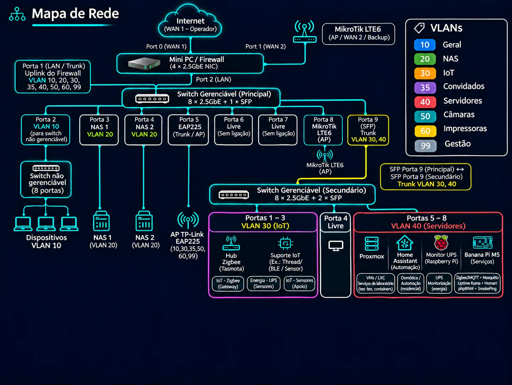
Home Lab: uma rede para experimentar
Firewall, switches geríveis, VLANs, servidores Proxmox e automação num ambiente de testes que continua a evoluir.
Conhecer o projeto →Explorar os projetos.
14 projetos
Instalado e testado nas funções descritas.
Instalado ou parcialmente validado; há testes pendentes.
Há funcionalidades ou casos de teste que não funcionaram como esperado.
Ideia ou tecnologia por instalar e documentar.

Ferranti Mark I
Painel simplificado a 100% e Love Letters; painel completo em investigação.
Explorar →SIMH CPanel · 1952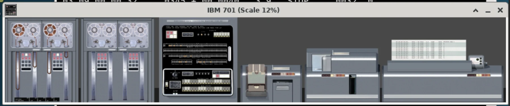
IBM 701
Painel original funcional
Explorar →SIMH CPanel · 1954
IBM 650
SORT 2 concluído
Explorar →SIMH CPanel · 1954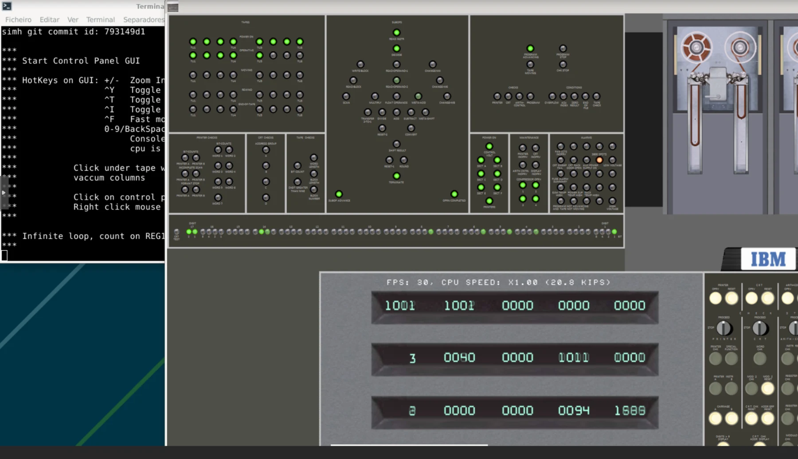
IBM NORC
Painel e fitas
Explorar →SIMH CPanel · 1966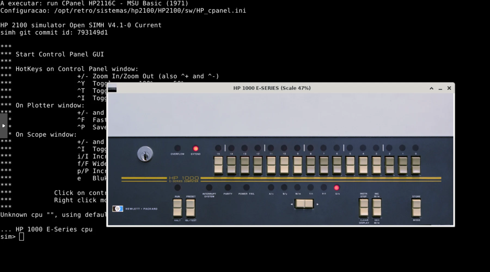
Hewlett-Packard
Painel HP 1000 E-Series; modelos em teste
Explorar →Mainframes IBM · 1972
IBM OS/360 — MFT
Release 21.0: IPL, consola IBM 3215 e resolução dos erros de arranque.
Ler o artigo →Mainframes IBM · 1981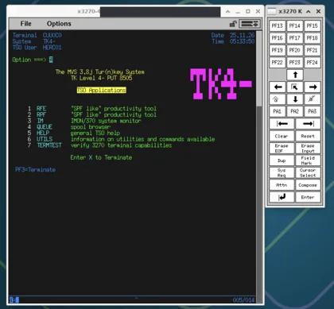
Mainframes IBM — Hercules e MVS
Sistema IBM System/370 emulado, IPL e acesso TSO por terminal 3270.
Ler o artigo →Retrocomputação · 1982–1994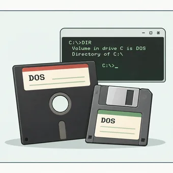
MS-DOS: três gerações
Compaq DOS 1.25, MS-DOS 3.30 e MS-DOS 6.22: arranque, discos virtuais, teclado português e capturas.
Ler o artigo →Retrocomputação · 1985–1993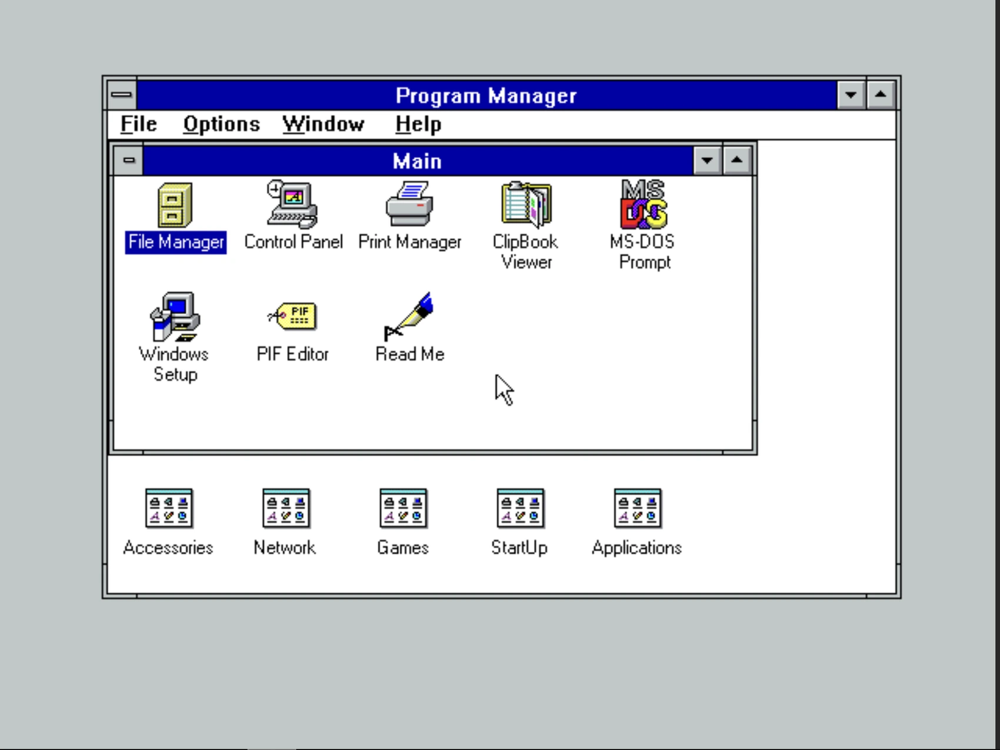
Windows 1.01, 2.1 e 3.11
Instalações sobre DOS em VMs Proxmox: MS-DOS Executive, Notepad, Setup e Program Manager.
Ler o artigo →Funcional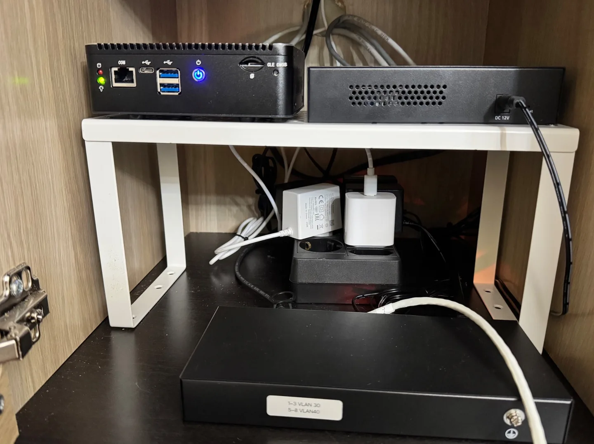
Home Lab
Visão global da infraestrutura e dos serviços.
Explorar →Funcional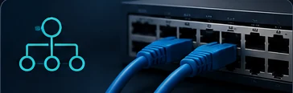
Redes e VLANs
Segmentação, firewall, switches e Wi‑Fi.
Explorar →FuncionalpfSense e failover
Gateways, continuidade de ligação e comutação automática da fibra para LTE.
Explorar →FuncionalProxmox
Virtualização, containers, armazenamento e backups.
Explorar →Funcional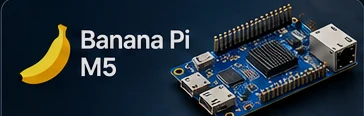
Banana Pi M5
Um pequeno servidor para monitorização, automação e gestão da rede.
Explorar →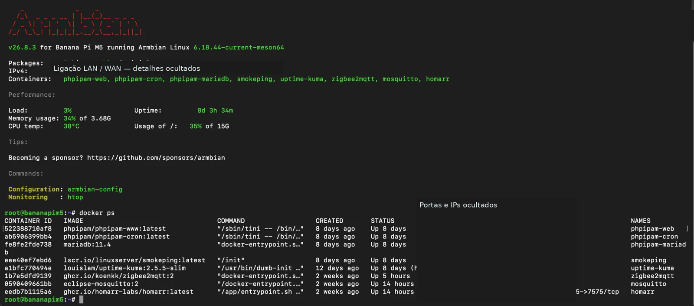
Docker arrancou antes da rede
Porque falharam vários serviços no Banana Pi após uma falha de energia: diagnóstico, systemd, DHCP e correção documentada.
Ler o caso prático →FuncionalHome Assistant
Automação, sensores, MQTT e Zigbee.
Explorar →Funcional
Homarr
Painel de acesso aos serviços e organização.
Explorar →Em testes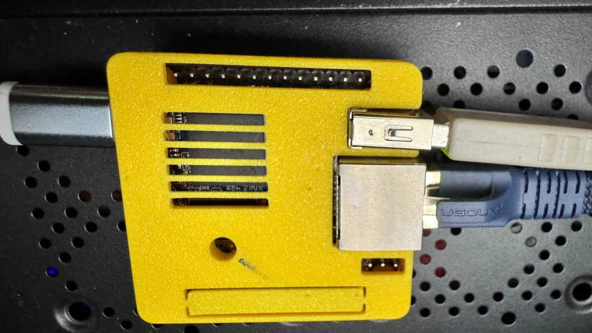
Monitorização
Verificação de serviços, alertas e continuidade.
Explorar →Laboratório — índice de temas
Windows NT e 2000, arranque PXE/iVentoy e FOG Project. Escolhe o tema que queres explorar.
Ver temas do laboratório →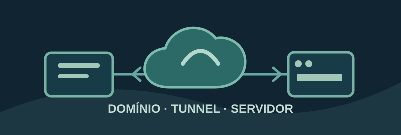
Cloudflare e alojamento local
Domínios, DNS e WordPress em servidor próprio, sem depender de alojamento tradicional.
Explorar → InfraestruturaAcesso remoto
InfraestruturaAcesso remotoTailscale — acesso remoto
Rede privada entre dispositivos e acesso remoto ao laboratório sem expor diretamente os serviços à internet.
Explorar →Como ler esta Wiki
O que vais encontrar
- Explicações simples sobre o objetivo de cada projeto e as tecnologias utilizadas.
- Capturas de ecrã e diagramas acompanhados de contexto.
- Exemplos documentados, problemas encontrados e soluções adotadas.
- Outros artigos serão adicionados à medida que forem documentados.